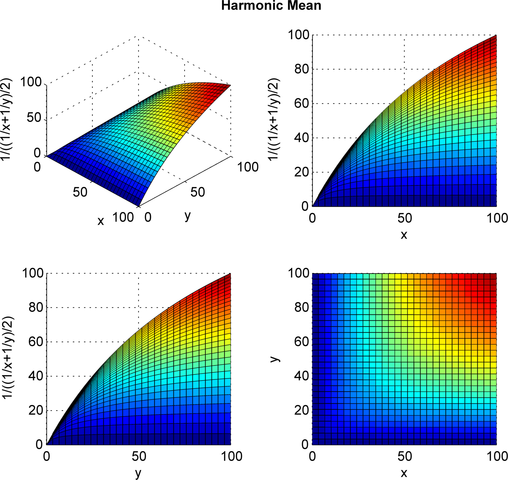

Classification evaluation
Summary
- \(precision = \frac{tp}{tp+fp}\).
- \(recall = \frac{tp}{tp+fn}\).
- High precision can be achieved trivially, at the cost of recall; and vice versa.
- \(fscore = 2*\frac{precision*recall}{precision+recall}\) is the harmonic mean of precision and recall, which produces a better average of the two measures than an arithmetic mean.
Assume we have a classifier that adds labels (classes) to each document or data point. How do we evaluate how well it is doing its job? We have three cases, considering all predicted labels as a group:
- True positive (tp)
- predicted labels that are true labels
- False positive (fp)
- predicted labels that are not true labels
- False negatives (fn)
- true labels that were not predicted
Since these measures depend on the number of labels (predicted and true), and that may differ depending on the document/data point or experiment, we calculate the following normalized scores:
- Precision
- \(tp/(tp+fp)\) — higher precision means the labels that were predicted were more often true labels
- Recall
- \(tp/(tp+fn)\) — higher recall means more of the true labels were predicted
We can achieve very high precision by only predicting labels for which we have very high confidence (until we nearly choose no labels at all); this would decrease recall, however. We can achieve high recall by predicting every label for every data point; this would decrease precision, however.
Best would be high precision and high recall. We can measure this by combining precision and recall into a single formula, called the "F-score" or "F1-measure":
- F-score
- \(2*precision*recall / (precision + recall)\)
Notice that precision and recall are treated equally in this calcuation. Technically, the F-score is the harmonic mean of precision and recall.
This graph (from Wikipedia) shows the harmonic mean of two numbers (\(x\) and \(y\), which you can interpret as \(precision\) and \(recall\)). It shows the relationship we want: if either \(x\) or \(y\) is \(0\), the F-score is \(0\). Otherwise, the F-score generally increases with increases in \(x\) and \(y\).
{kind=link}
